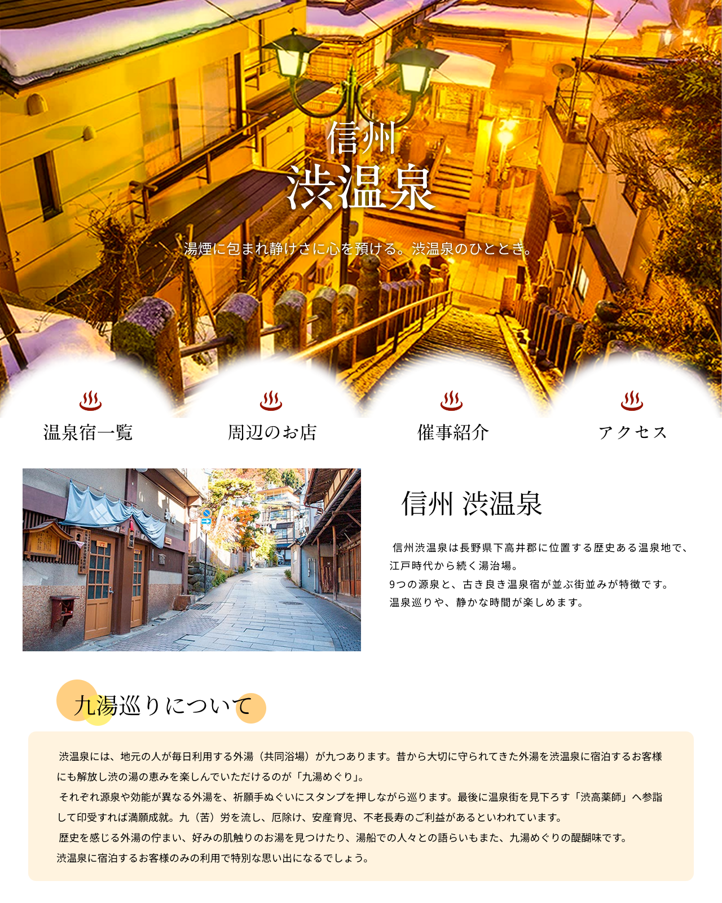

About
Profile

| Name | 下地 ひな子 |
| Birthday | 平成11年11月11日 |
| Hobby | バスケ観戦・モルック・カラオケ |
Skills
Photoshop
Figma
Exel
WEBクリエイター検定エキスパート
歯科衛生士免許
PortFolio
About
Profile
| Name | 下地 ひな子 |
| Birthday | 平成11年11月11日 |
| Hobby | バスケ観戦・モルック・カラオケ |
Skills
2021年4月 〜 2024年10月
駒沢パークサイド歯科口腔外科
小児歯科から口腔外科まで幅広い診療科目を経験しました。
2024年12月 〜 2025年2月
サイテクカレッジ普天間校
職業訓練「WEBクリエイター実践科コース」を3ヶ月受講。バナー・Webサイト制作、資格取得の学習を通しデザインの基礎知識からコーディングまで幅広く習得しました。
2025年3月 〜 2026年5月
株式会社シーエーアドバンス
サイバーエージェントの子会社として大規模な広告運用のオペレーション部に配属され、社内ツールの更新運用や広告レポートの作成を担当しておりました。
バナー制作


動画制作
Webサイト制作
